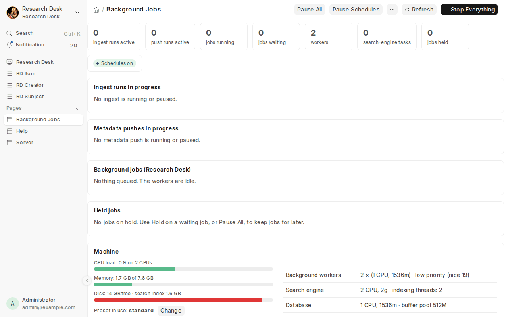
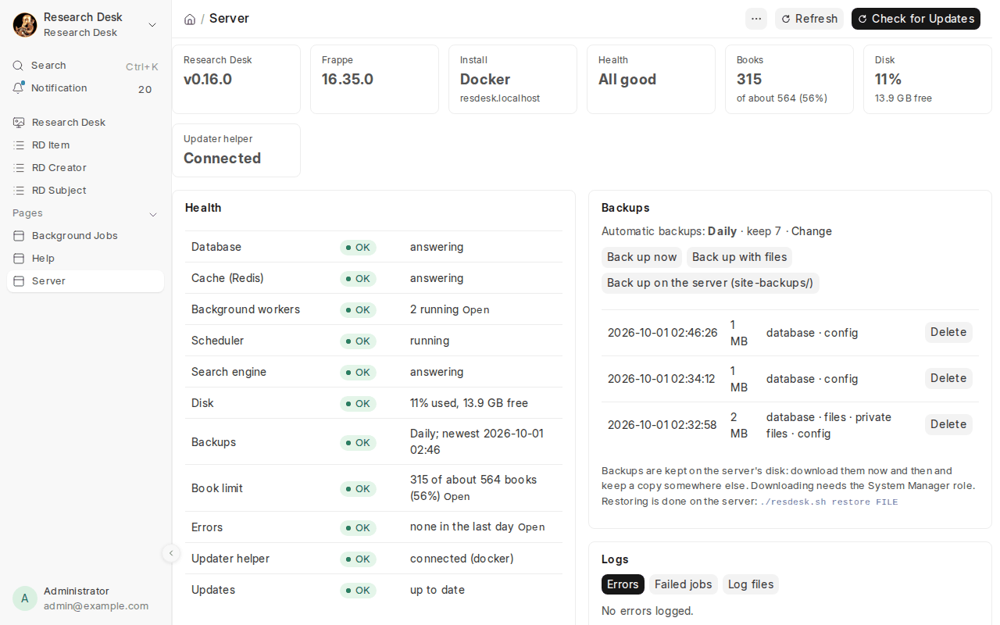
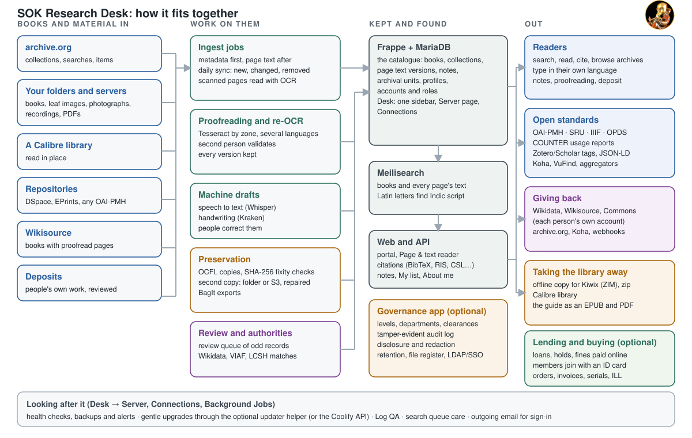

Our software
SOK Research Desk
An open-source digital library, archive and research platform for books, manuscripts, photographs and recordings. Made for Indian languages, open to every language.
Research Desk
Full text of every page, in Kannada, Hindi, Tamil and other languages.
Page-by-page reader, notes, reading lists and the usual citation formats.
People proofread the text and rerun OCR where it is wrong. The software only makes a first draft.
Permanent links, checksums, and a second copy that repairs itself.





Light to run, standard at every edge
The Archive keeps the scans, so a laptop can host tens of thousands of books. Page text lives only in the search engine. Every exchange uses a published standard.
One server first, a consortium later
One product instead of five tools stitched together
| A library usually runs | Research Desk gives |
|---|---|
| RepositoryGreenstone, Omeka, DSpace | One catalogue with ingest, curated collections and exports |
| DiscoveryVuFind, Blacklight | Search inside every page, with filters by collection, language and decade |
| ReaderBookReader, Mirador | Read online, search inside the book, cite it in the usual formats |
| OCR and proofreadingTesseract scripts, FromThePage | OCR as a first draft that people check and correct |
| PreservationArchivematica, LOCKSS | Permanent links, checksums and backups from the Desk |
The last step before the reader
Scanners capture, OpenScribe manages the work, Repub processes, Research Desk is the library people use.
Koha keeps loans, Research Desk adds the text
Koha holds print copies, members and circulation. Research Desk gives full text, reading and citation, and trades records with it through OAI-PMH and MARCXML. VuFind, BASE and CORE can harvest it the same way.
The wider knowledge commons
Every page is also inside the app, under Help. Docs index · Everything it does · GitHub
A laptop or one machine, in about 20 minutes
Docker or a native install on macOS or Ubuntu. 4 GB of free memory and 10 GB of disk. It can load sample books to try.
Your own server, your own name
A web address with HTTPS, your logo and About page, members-only books, nightly backups, and upgrades from a button with a rollback.
Optional governance edition
Adds the records-office app for departments and public archives. Installed with one flag.
# get it
git clone https://github.com/ServantsOfKnowledge/researchdesk.git
cd researchdesk
# install
./install.sh
./install.sh --domain library.example.org # on a server, with HTTPS
./install.sh --edition governance # adds the records-office app
# keep it current
./upgrade.shStatus: before 1.0. It works end to end and runs the live Servants Of Knowledge portal. Installation guide · Roadmap · Changelog